[ Home ] [ Travel ] [ Photography ] [ Pets ] [ Games] [ Rowing] [ Physics ]

A Visit to the Big Island
Travel
Cruises
Past Cruises (Diaries)
Future Cruises
Rogues Galleries
Land Trips
Diaries (Land Trips)
Hawai'i - Big Island - 04'01
Hawai'i - Maui - 05'02
Hawai'i - Big Island - 04'03
Hawai'i - Kaua'i - 09'04
Hawai'i - Big Island - 04'06
Hawai'i - Maui - 04'06
Mainland China - 05'07
Phoenix, Arizona - 12'07
Greek Isles - 05'08
Hawai'i - Kaua'i - 09'08
Hawai'i - Big Island - 09'09
Hawai'i - Maui - 05'12
Hawai'i - Big Island - 04'13
Ireland - 08'13
Mexico - Cancun 11'13
France/Belgium/Lux 07'15
Hawai'i - Big Island - 05'17
England / Wales - 06'17
Hawai'i - Big Island - 09'19
Photography
Cameras
Underwater
Pets
Tara
Blackie
Whitey
Muffy
Ollie
Rusty
Fluffy
Rufus&Dufus
Games
Rowing
Physics
Back in 1980 and 1982, we had done two vacations to Hawai'i and just loved it. Both times were for 3 weeks and we did three islands - Oahu, Maui and Kaua'i. After starting a family and moving to Ontario, we put future trips to Hawai'i on the back burner. Twenty years later, with the family grown and us living in Calgary, Hawai'i beckoned again. We had never been to the Big Island, so decided to book a week there. In the past we had always booked our flights and accomodation individually, but this time Marj found a deal through SunQuest that included flight, hotel and car rental. The hotel was in the Kona area.
We only had one catastrophy on the trip and that occured on the first day. our flight from Calgary to Kona had a stopover at Vancouver where we had to claim our luggage to pass through US customs pre-clearance. Marj's sister and brother-in-law met us there for a short visit. While we talked to them, I was distracted from watching the bags on the carousel. Finally, there were just two bags on the carousel. One was our blue bag, and the other was a dark green bag I'd never seen before. It looked just like our missing black bag so I knew immediately what had happened. Some green/black colorblind Vancouverite had taken the wrong bag. So, we had to proceed to Hawai'i with only one bag. Unfortunately, the lost bag had all of Marj's summer clothes in it. The bag was returned to the airport and re-directed on to us, but we didn't get it until our third day. In the meantime, Marj sweated in her Calgary clothes.
We arrived after dark, and finding the hotel took some work. It turned out to be a beautiful hotel, right on the ocean. We were one of the last to stay there as it was being sold. Some Japanese people purchased the hotel and spent almost 2 years renovating. For whatever reason, it was sold again to Sheraton, who spent another year or so renovating it. I think it finally opened again in 2005.
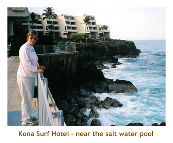 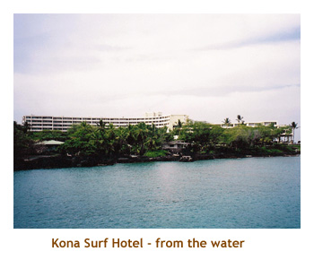The first order of business was to rent some snorkelling equipment. We had some old stuff from 1980 - that hard black rubber stuff. The newer brightly colored, softer silicone stuff seemed much better. also, Marj wanted to get prescription lenses, as she doesn't wear contacts any more. We went to Snorkel Bob's and they were great. Marj got a prescription mask that had the perfect correction. We were set for a week of snorkelling.
The sales guy at Snorkel Bob's was all excited about his short vacation the next day. He was going across island to Hilo for the Merry Monarch Festival. This turned out to be a huge hula dancing event where entrants arrive from all over the US, and even other countries. The festival spans the last week of April. We got to see a good portion of the festival because it was broadcast live on TV all day.
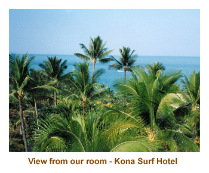
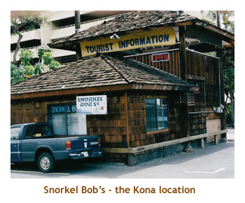
The first beach that we snorkelled turned out to be our favorite. Kahalu'u Beach Park was just a short drive from our hotel. It's a sheltered bay with a man-made breakwater. The water is calm enough for children or nervous swimmers. There are tons of fish, which are easily visible due to the shallowness of the water (about 4 to 8 feet deep). We saw turtles, parrot fish, triggerfish, wrasse, butterfly fish, puffers, surgeon fish, eels, and even turtles. What a great beach.
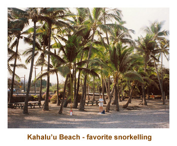
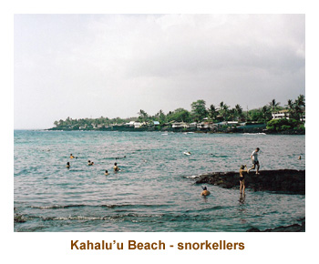
We used the Snorkel Hawai'i book by Judy and Mel Malinowski as our guide for snorkelling sites. It was very helpful. On two different days we headed up the Kohala coast to Anaheo'omalu Beach and Hapuna Beach. However, both days were quite windy and the water was churned up. We enjoyed the beautiful beaches, but the snorkelling was not so good.
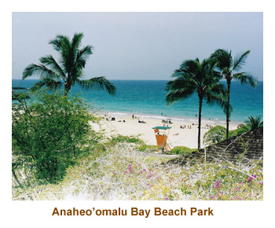
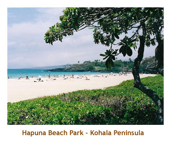
As a special treat, we booked the Fair Wind II out of KeauhouBay for a sail / snorkel trip to Kealakekua Bay. (This is the bay where Captain Cook met his fate at the hands of some angry Hawai'ian Islanders). It was a beautiful day and the snorkelling was awesome. The bay is horseshoe shaped, and the coral bottom slopes steeply into the abyss. When you are swimming parallel to the shore, on one side you can see coral and fish, while on the other side you can see the bottom disappearing into the deep blue ocean. The double hulled boat was comfortable and they did a beef / chicken barbeque right on the boat. It was a great excursion.
On another day we spent some time walking through Pu'uhonua o Honaunau - the City of Refuge. It was very interesting. After visiting the park, we located the snorkelling area across from the site, but decided not to try it.
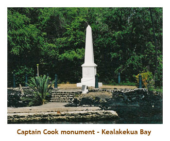
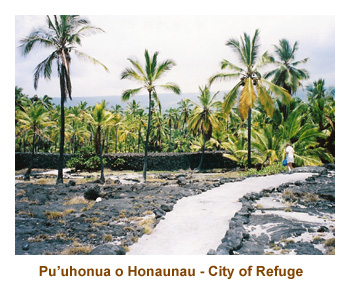
We tried several of the restaurants in the Kona area, all of which were good and some of which were expensive. Our two favorite places were Teshima's (Japanese) near Captain Cook, and Merriman's in Waimea (also known as Kamuela).
We also love macadamia nuts and found the Macnut Farms outlet just south of Captain Cook.
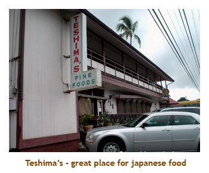
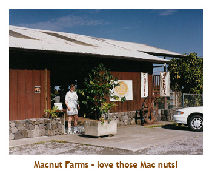
All in all, it was a great trip. We only had a week, so we spent it close to the Kona area. We did not venture over to Hilo or the volcano area. That's for next time!